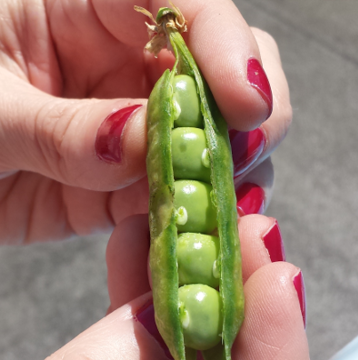

Zucchine

Coltivare in terreno molto ricco di materia organica e non coltivare dopo Solanacee o piante della stessa famiglia delle cucurbitacee.
- Varietà: Zucchina chiara di Faenza
- Periodo di Semina: Marzo / Aprile
- Primo raccolto: Fine Aprile
- Ultimo raccolto: Fine Luglio
- Raccolto
| Dimensione | Quantità |
| Piccole (10cm) | 16 |
| Medie(11-16cm) | 26 |
| Grandi(>16cm) | 9 |
| 51 |
Piselli

American Wonder: Varietà media precocee come ciclo colturale.
Consigli
- Piantare in semenzaio riscaldato.
- Acquistare vasetti biodegradabili (di cocco o cartone)
- Mantenere areato il semenzaio per evitare muffe
- Non usare il coperchio del semenzaio
- Non usare mettere il semenzaio vicino al termosifone
- Fissare i sostegni nel terreno non appena le piantine raggiungono i 10 cm
- Acquistare una rete con spazi di non più di 10cm per garantire sostegni adeguati